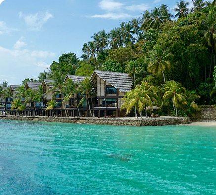
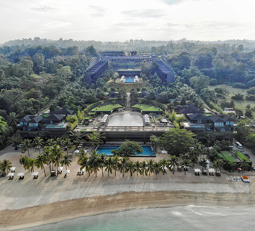
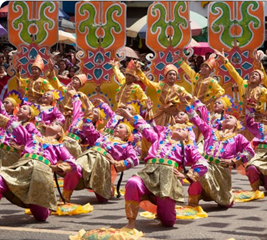
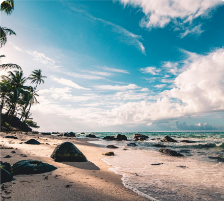

ISLAND GARDEN CITY OF SAMAL
Your Tropical Island Getaway in Mindanao
Nestled off the coast of Davao City, the Island Garden City of Samal (IGaCoS) is a dream destination for sun-seekers and water sports enthusiasts. Home to luxurious resorts like Pearl Farm and countless hidden coves, Samal showcases pristine beaches, colorful coral reefs, and a laid-back island vibe that entices visitors from around the world.

Geography & Area
An Island Spread Across Stunning Coastal Landscapes
IGaCoS encompasses Samal Island and several smaller islets, covering about 301 square kilometers. Despite its relatively small land area, the island boasts diverse terrain—from gently sloping hills to mangrove-lined shores. A short ferry ride from Davao City whisks you to a tropical haven where the sea breeze and swaying palms instantly set the mood for relaxation.

Brief History
From Tribal Lands to a Thriving Island City
Long before colonial influences, Samal Island was home to indigenous communities who thrived on fishing and trading. Spanish and American periods introduced new governance structures, eventually merging the municipalities of Babak, Samal, and Kaputian in 1998 to form IGaCoS. Today, heritage sites and age-old traditions coexist with booming tourism, celebrating the island’s cultural evolution.

Demographics & Language
A Melting Pot of Island Cultures
Locals primarily speak Cebuano (Bisaya), with Tagalog and English widely understood—especially in resorts and commercial areas. You’ll also meet islanders with deep ancestral roots, preserving local folklore and fishing traditions. This linguistic diversity ensures a welcoming environment for visitors from all walks of life.

Climate & Environment
Year-Round Sunshine Meets Rainforest Showers
Expect a tropical climate with warm temperatures and occasional rain showers that keep the foliage lush. The city government and NGOs champion reef conservation, beach cleanups, and responsible tourism practices—essential for preserving Samal’s clear waters, coral gardens, and diverse marine ecosystems.
Reference: davaodelnorte-samal-island